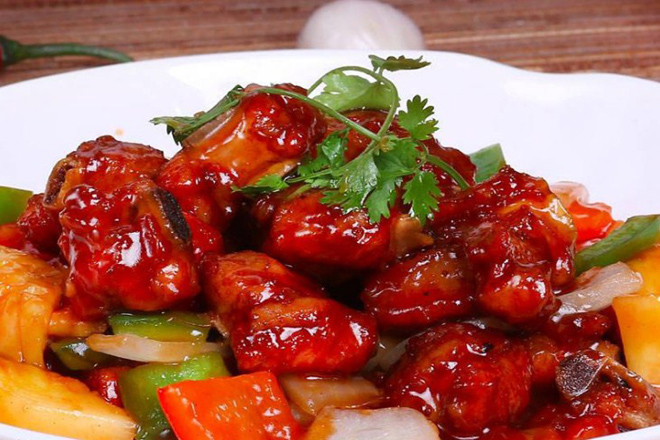
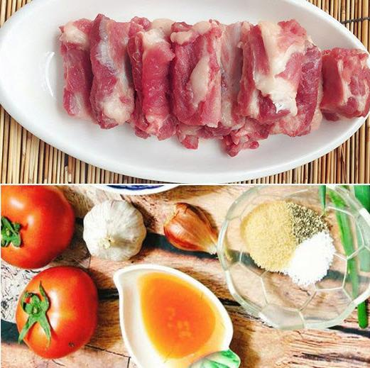

Cách làm sườn xào chua ngọt ngon hết ý !
-> Xem thêm cách làm các món ăn khác..
Sườn xào chua ngọt là món ăn chính trong bữa cơm gia đình Việt Nam, đây là món ăn không bị ngán, mà rất giàu chất dinh dưỡng. Cách làm sườn xào chua ngọt miền Bắc thì khá đơn giản với nguyên liệu chính là sườn, còn miền Nam thì nhiều màu sắc, và hương vị
Hình ảnh về món ăn .
Sau đây tôi sẽ hướng dẫn mọi người làm món sườn xào chua ngọt kiểu miền bắc
Nguyên liệu để nấu bao gồm :
-500 gr sườn thăn
-4 thìa nước mắm
-5 thìa nhỏ đường
-5 thìa nhỏ dấm hoặc chanh
-1/3 bát nước soi để nguội
-Dầu ăn , mắm , tỏi , hành củ , hành lá , ớt , rau mùi
Lưu ý: Nên chọn sườn non, có xương nhỏ, nhiều thịt, để chọn sườn tươi ngon thì màu phải tươi, không mùi, ấn nhẹ vào có độ đàn hồi 
Hướng dẫn làm sườn xào
Bước 1:sơ chế nguyên liệu
- Sườn rửa sạch, chặt miếng vừa ăn, trần qua nước sôi với chút muối để khử sạch mùi hôi, sau đó rửa sạch lại,
- Ướp sườn với hạt nêm, mắm tầm 10 phút
- Hành, tỏi bóc vỏ, đập dập.
- Hành lá rửa sạch, cắt khúc nhỏ để trang trí
Bước 2:pha nước sốt sườn xào chua ngọt- Cho 5 thìa đường, 5 thìa dấm, tỏi, ớt, nửa già bát con nước sôi nguội, nước mắm rồi khuấy đều. Tùy vào khẩu vị ăn cay để cho thêm ớt.
- Có thể thay dấm bằng chanh hay me, cà chua đều được. Nếu dùng chanh thì nên cho vào sau cùng, vì khi chanh được đun lâu sẽ bị đắng.
- Cách làm món sườn xào chua ngọt ngon chủ yếu là ở nước sốt
- Cách làm nước sốt sườn xào chua ngọt ngon như nhà hàng là phải sánh, có màu đỏ thẫm đẹp mắt. Để làm được điều này bạn sẽ cho thêm tương ớt, tương cà hoặc cà chua. Như vậy món sườn xào chua ngọt sẽ ngon hơn rất nhiều.
Bước 3:xào sườnSườn sau khi trần qua nước sôi thì để ráo rồi chiên qua với dầu ăn. Lưu ý chiên màu hơi ngả vàng, tránh bị cháy sẽ khiến sườn bị khô, quắt lại sẽ không ngon
Hành khô phi vàng, đổ hỗn hợp nước sốt vào, đun sôi nhỏ lửa.
Cho sườn hỗn hợp nước sốt, đảo đều, rồi đun đến khi sền sệt thì tắt bếp
Bí quyết để món sườn chua ngọt ngon đúng điệu là phải mềm, ngấm vị là khi xào sườn các bạn cho thêm 1 chút nước, đun nhỏ lửa tầm 5 phút, như vậy sườn vừa ngon lại vừa mềm, không bị khô
Trình bày , thưởng thức
Múc sườn ra đĩa, rắc thêm chút hành tươi thái nhỏ lên trên trang trí cho đẹp mắt. Sườn xào chua ngọt miền Bắc thơm ngon, ăn với cơm hấp dẫn vô cùng.